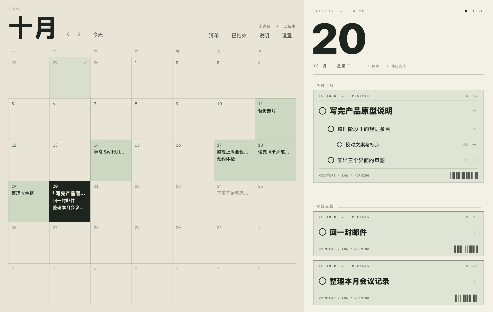
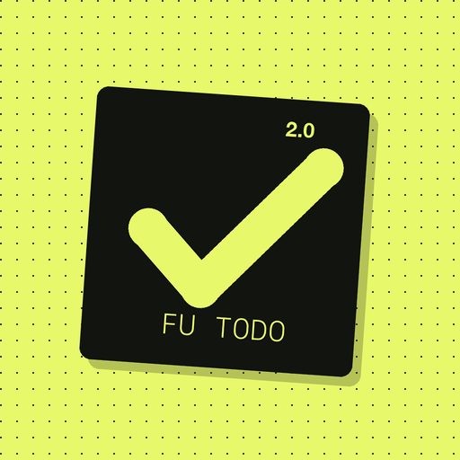
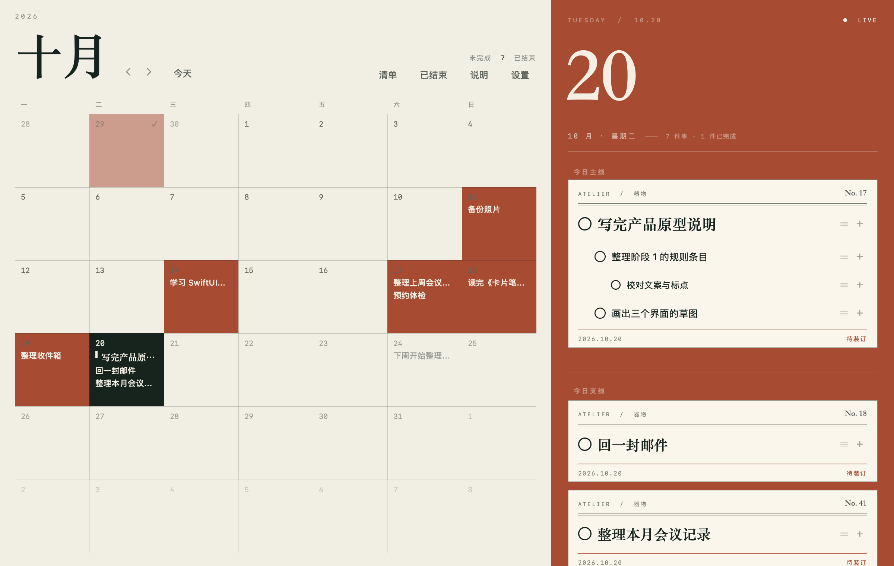
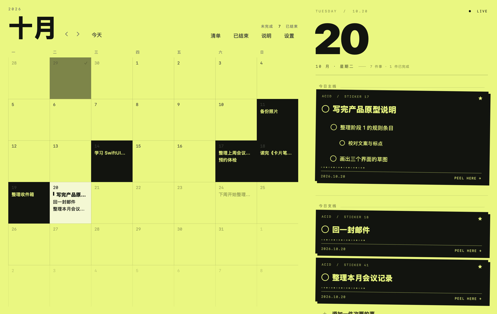
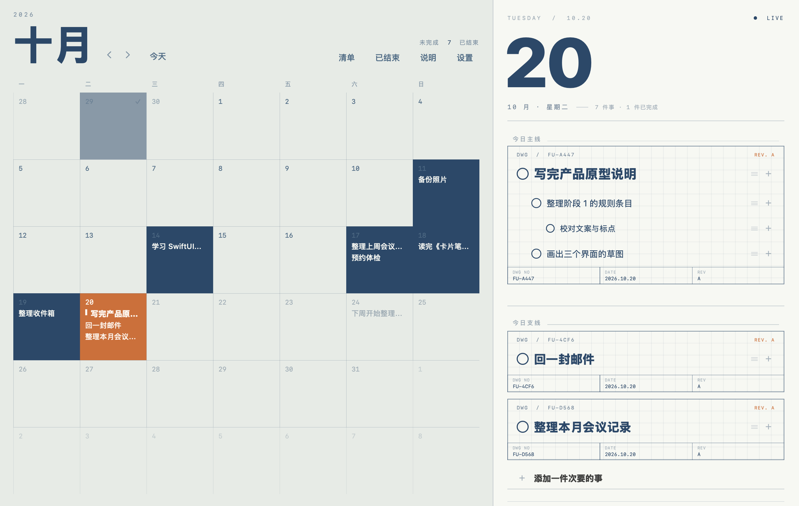
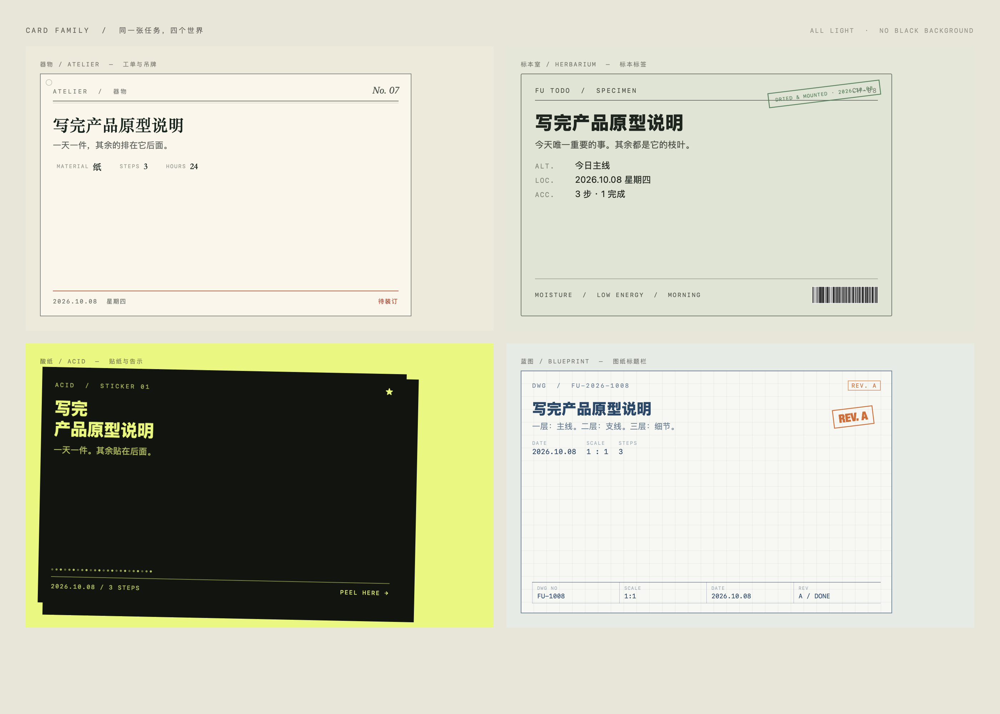
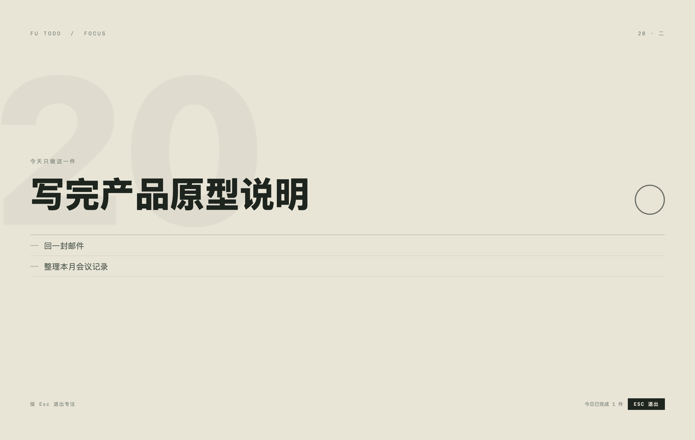
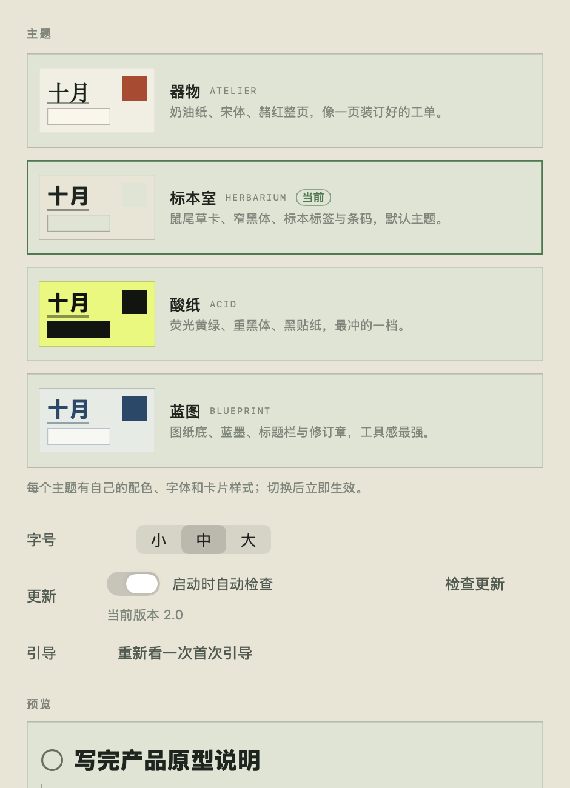

标本室 HERBARIUM默认
米纸、鼠尾草卡、窄黑体、标本标签与条码。完成时盖「DRIED & MOUNTED」日期章。
2.0 不是换一套颜色。主界面重排成「报头 + 线格月历 + 满高日页」， 四套浅色主题各自带字体与卡片物种：工单、标本标签、贴纸、图纸标题栏。 同一套交互，四种世界。

每套主题有自己的底色、整页色块、字体与完成语言。默认是标本室；切换立即生效，不需要重启。

米纸、鼠尾草卡、窄黑体、标本标签与条码。完成时盖「DRIED & MOUNTED」日期章。

奶油纸、赭红整页、宋体工单。每个一级任务是一张可交付的工单，完成时盖「已交付」圆章。

荧光黄绿、重黑体、黑贴纸。最冲的一档，完成时贴一张「DONE」。

图纸底、蓝墨、标题栏与修订章。工具感最强的一档，完成时盖「REV. A」。
不是一张卡片换四个颜色。工单关心工序，标本标签关心分类与位置，贴纸关心口号，图纸关心版本与比例——卡片上出现什么，由那个世界的专业习惯决定。

结构从「工具栏 + 两栏卡片」变成「报头 + 线格月历 + 满高日页」；颜色承担信息，卡片退成实物。
完成不再只是打勾：每个主题盖自己的章；换日是一页翻过去；专注模式把整窗留给今天唯一的一件事。

设置页只留主题、字号、更新、引导与数据。旧的 5 套配色、深浅色与字体开关被移除；旧数据与旧备份会自动落到新主题，不丢内容。

数据格式没有变，直接覆盖安装即可；首次打开会沿用你原来的任务与历史。
需要 macOS 14+ 与 Swift 6 工具链（命令行工具即可）。
下载 GitHub Releases 里的 FU-ToDo-2.0.dmg，拖进「应用程序」，首次右键打开。
2.0 · 2026.10.20 · 四套浅色主题 / 四种卡片物种 / 268 项自测通过 · 数据与交互保持兼容